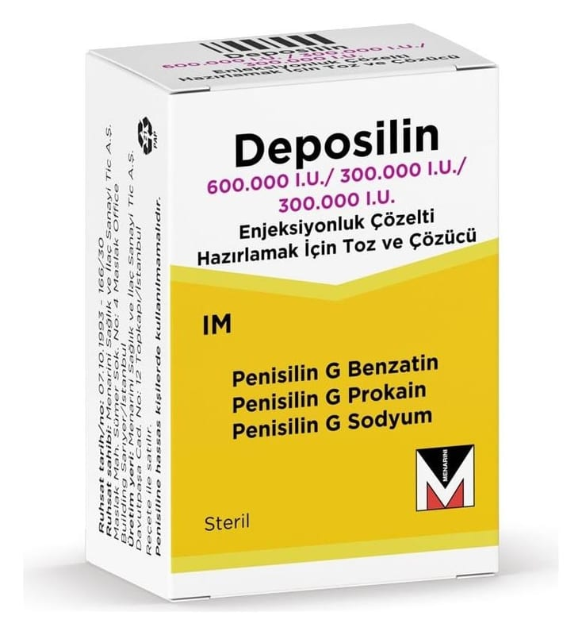

Deposilin 600.000/300.000/300.000 I.U. Enjeksiyonluk Çözelti Hazırlamak İçin Toz Ve Çözücü

Ne için kullanılır
KT · Bölüm 1DEPOSİLİN, beyaz veya krem renkli hemen hemen kokusuz toz içeren bir flakondur ve enjeksiyonluk su içeren çözücü bir ampul ile birlikte takdim edilmektedir.
Her bir flakon 600.000 IU benzatin penisilin G, 300.000 IU prokain penisilin G ve 300.000 IU sodyum penisilin G içermektedir.
DEPOSİLİN aşağıdaki enfeksiyonların tedavisinde kullanılmaktadır:
●
Üst solunum yollarındaki bazı hafif ve orta şiddetteki enfeksiyonlar ●
Deri ve yumuşak doku enfeksiyonları ●
Erizipel (cilt üzerinde iltihaplı kızarıklıklar gösteren ateşli bir hastalıktır), kızıl (ateş ve döküntü ile seyreden bir hastalık) ●
Hafif ve orta şiddetteki akciğer iltihabı (pnömoni) ve orta kulak iltihabı
DEPOSİLİN 6.3.3 frengi, bel soğukluğu, yaws (tropikal bir enfeksiyon), bejel (akdeniz ülkelerinde rastlanan frambezi benzeri bir hastalık) ve pinta (bir çeşit deri hastalığı) gibi zührevi hastalıkların tedavisinde kullanılmaz. Bu hastalıklarda DEPOSİLİN’in bir başka formu kullanılmaktadır.